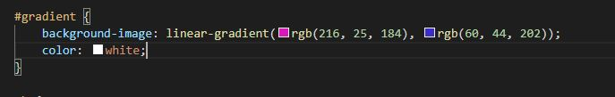

10/11 - 10/15, Node.js/Web Service
This week we covered creating a web service using Node.js, as well
as learning some of the philosophy behind the platform. In our readings
I noticed that the 'ethos' of the Node.js community was sharing. I was surprised
to see that there are tons of communities online all dedicated to sharing libraries
and pitching ideas back and forth. I feel like this is a different sort of attitude
than what I'm used to hearing about in the news. Typically having ones source code
leaked is a huge deal. Here it is encouraged! The labs we did in class also gave me
a good sense of how Node.js can be used. Creating these types of applications on the
web make them instantly available to everyone across the globe without needing to worry
about a download or any sort of distribution.
While doing our peer reviews for each others websites last week I noticed that some of my peers had gradient backgrounds.
I looked into this over the last few days. It's fairly simple but I think it can really add style to your pages.
While I don't think it would go well with my static site as I think the gray background fits it better. I think
I'll be using some sort of gradient on our next project.

Sources:
https://www.w3schools.com/css/css3_gradients.asp
https://cssgradient.io/
Return.